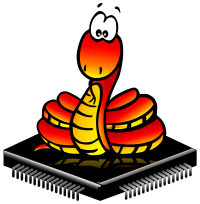

Hackeando CPython
de forma divertida
de forma divertida
Dr. Cristián Maureira-Fredes
Escribiendo código en 
@cmaureir


Hablar de Hacking puede sonar difícil o hasta imposible
Pero existen distintas definiciones
Antes de ensuciarnos las manos
miremos un par de cosas üìù
Requerimientos
- Ordenador: ✅
- Ganas de aprender: ✅
- (todo lo demás lo veremos en la charla)
¿CPython?
¿Creo que te sobra la C? ü§î


Implementaciones de Python



- MicroPython
- RustPython
- Jython
- PyPy
- Pyston
- Stackless Python
- IronPython
- Pyjion
- CPython üéâ
El código CPython
La estructura de CPython (1/2)
Doc/ Misc/ Parser/ LICENSE config.sub* pyconfig.h.in
Grammar/ Modules/ Programs/ Makefile.pre.in configure* setup.py
Include/ Objects/ Python/ README.rst configure.ac
Lib/ PC/ Tools/ aclocal.m4 install-sh*
Mac/ PCbuild/ CODE_OF_CONDUCT.md config.guess* netlify.toml
La estructura de CPython (2/2)
- Doc - documentación oficial
- Include - archivos de cabecera del intérprete
- Grammar - Gramática PEG (PEP 617)
- Lib - stdlib en Python puro
- Modules - stdlib en C
- Objects - Tipos incorporados
- Python - Tiempo de ejecución CPython
Construyendo tu propio Python
- Clona el repositorio
git clone https://github.com/python/cpython.git - Configura el proyecto
# Puedes seleccionar un directorio de 'build' e 'install' cd cpython/ ./configure - Compila, y a disfrutar!
# Para 'X' procesos make -j X ./python Python 3.11.0a0 (Jul 27 2021, 22:56:41) [GCC 11.1.0] on linux Type "help", "copyright", "credits" or "license" for more information. >>> print("yay!") yay!
...pero se nos olvida un pequeño detalle
Una introducción /super corta/ a C
üò®
Python y C
# Un comentario
import mi_modulo
def suma(a, b):
return a + b
def main():
msg = "hola mundo"
x = 3
y = 0.14
z = suma(x, y)
print("%f" % z)
if __name__ == "__main__":
main()
// Un comentario
#include <mi_modulo.h>
float suma(int a, float b) {
return a + b;
}
int main(){
char msg[] = "hola mundo";
int x = 3;
float y = 0.14;
float z = suma(x, y);
printf("%f", z)
return 0;
}
Python y C (+anotaciones de tipo)
# Un comentario
import mi_modulo
def suma(a: int, b: float) -> float:
return a + b
def main() -> None:
msg: str = "hola mundo"
x: int = 3
y: float = 0.14
z: float = suma(x, y)
print("%f" % z)
if __name__ == "__main__":
main()
// Un comentario
#include <mi_modulo.h>
float sum(int a, float b) {
return a + b;
}
int main(){
char msg[] = "hola mundo";
int x = 3;
float y = 0.14;
float z = suma(x, y);
printf("%f", z)
return 0;
}
Python tambi√©n puede ser complicado ü•≤
_="_=%r;print(_%%_)";print(_%_)
# Para un número 'n'
n&~-n<1
Pero lo más importante...
Felicidades, aprendiste C ü•≥
(bueno...un poquito)
¡No tengas miedo!
No es tan dificil comenzar a hackear cpython ⭐

¡No tengas miedo!
No es tan dificil comenzar a hackearromper cpython ⭐
...y Python es un proyecto normal, como los nuestros üëÄ.
ADVERTENCIA
Nos vamos a lanzar a ver código CPython.¿Dónde y Qué modificar?
¡Utilicemos el poder de gdb! üîÆ
Busquemos la función main
Eso no se ve tan obvio üòë
El útil modulo dis
from dis import dis
def suma(a, b):
return a + b
dis(suma)
2 0 LOAD_FAST 0 (a)
2 LOAD_FAST 1 (b)
4 BINARY_ADD
6 RETURN_VALUE
¿BINARY_ADD ü§î?
PyObject
typedef struct _object {
_PyObject_HEAD_EXTRA
Py_ssize_t ob_refcnt;
struct _typeobject *ob_type; // ?
} PyObject;
typedef struct _typeobject {
PyObject_VAR_HEAD
const char *tp_name; /* For printing, in format "." */
Py_ssize_t tp_basicsize, tp_itemsize; /* For allocation */
/* Methods to implement standard operations */
destructor tp_dealloc;
Py_ssize_t tp_vectorcall_offset;
getattrfunc tp_getattr;
setattrfunc tp_setattr;
PyAsyncMethods *tp_as_async; /* formerly known as tp_compare (Python 2)
or tp_reserved (Python 3) */
reprfunc tp_repr;
/* Method suites for standard classes */
PyNumberMethods *tp_as_number;
PySequenceMethods *tp_as_sequence;
PyMappingMethods *tp_as_mapping;
/* More standard operations (here for binary compatibility) */
hashfunc tp_hash;
ternaryfunc tp_call;
reprfunc tp_str;
getattrofunc tp_getattro;
setattrofunc tp_setattro;
/* Functions to access object as input/output buffer */
PyBufferProcs *tp_as_buffer;
/* Flags to define presence of optional/expanded features */
unsigned long tp_flags;
const char *tp_doc; /* Documentation string */
/* Assigned meaning in release 2.0 */
/* call function for all accessible objects */
traverseproc tp_traverse;
/* delete references to contained objects */
inquiry tp_clear;
/* Assigned meaning in release 2.1 */
/* rich comparisons */
richcmpfunc tp_richcompare;
/* weak reference enabler */
Py_ssize_t tp_weaklistoffset;
/* Iterators */
getiterfunc tp_iter;
iternextfunc tp_iternext;
/* Attribute descriptor and subclassing stuff */
struct PyMethodDef *tp_methods;
struct PyMemberDef *tp_members;
struct PyGetSetDef *tp_getset;
struct _typeobject *tp_base;
PyObject *tp_dict;
descrgetfunc tp_descr_get;
descrsetfunc tp_descr_set;
Py_ssize_t tp_dictoffset;
initproc tp_init;
allocfunc tp_alloc;
newfunc tp_new;
freefunc tp_free; /* Low-level free-memory routine */
inquiry tp_is_gc; /* For PyObject_IS_GC */
PyObject *tp_bases;
PyObject *tp_mro; /* method resolution order */
PyObject *tp_cache;
PyObject *tp_subclasses;
PyObject *tp_weaklist;
destructor tp_del;
/* Type attribute cache version tag. Added in version 2.6 */
unsigned int tp_version_tag;
destructor tp_finalize;
vectorcallfunc tp_vectorcall;
/* bpo-37250: kept for backwards compatibility in CPython 3.8 only */
Py_DEPRECATED(3.8) int (*tp_print)(PyObject *, FILE *, int);
#ifdef COUNT_ALLOCS
/* these must be last and never explicitly initialized */
Py_ssize_t tp_allocs;
Py_ssize_t tp_frees;
Py_ssize_t tp_maxalloc;
struct _typeobject *tp_prev;
struct _typeobject *tp_next;
#endif
} PyTypeObject;
/* The *real* layout of a type object when allocated on the heap */
typedef struct _heaptypeobject {
/* Note: there's a dependency on the order of these members
in slotptr() in typeobject.c . */
PyTypeObject ht_type;
PyAsyncMethods as_async;
PyNumberMethods as_number;
PyMappingMethods as_mapping;
PySequenceMethods as_sequence; /* as_sequence comes after as_mapping,
so that the mapping wins when both
the mapping and the sequence define
a given operator (e.g. __getitem__).
see add_operators() in typeobject.c . */
PyBufferProcs as_buffer;
PyObject *ht_name, *ht_slots, *ht_qualname;
struct _dictkeysobject *ht_cached_keys;
/* here are optional user slots, followed by the members. */
} PyHeapTypeObject;

No tienes que aprenderlo todo
Piensa en PyObject como una caja grande üì¶, que se puede llenar con lo que necesites
Para un PyObject o (1/2)
- Si implementa elementos numéricos con PyNumber_ tenemos acceso a la API en docs.python.org/3/c-api/number.html
PyNumber_Check(o) // Verifica protocolos numéricos
PyNumber_Add(o1, o2) // Equivalente a o1 + o2
// Tambien para flotantes PyFloat_*
// y enteros largos PyLong_*
// ...
Para un PyObject o (2/2)
- Si implementa elementos de secuencia PySequence_ tenemos acceso a la API en docs.python.org/3/c-api/sequence.html
PySequence_Check(o) // Verifica protocolos secuencia
PySequence_GetItem(o, i) // Equivalente a o[i]
// Tambien para listas PyList_*
// y conjuntos PySet_*
// ...
Punteros üëá üëà üëâ ‚òùÔ∏è (en C)
int variable = X;
Asignamos el valor X a la variable.
(Similar en Python variable = X)
int *variable = X;
El puntero variable apunte a la dirección de memoria de X.
(Solo lectura de la dirección de memoria en Python id(variable))
Miremos algo distinto
lists y sets
Mejoras en futuras versiones
¿Sabías que
Python tiene modo twitch?
Hay muchos otros detalles que estudiar üòµ
- Conteo de referencias üßÆ
- Global Interpreter Lock (GIL) üîí
- Creaci√≥n de m√≥dulos y Tipos ü§ñ
Creemos el módulo pycones en C
- 1. Definir las funciones
- 2. Definir el módulo
- 3. Inicializar el módulo
- 4. Y ya üéâ
1. Definir las funciones
static PyObject* hola(PyObject* self, PyObject* args) {
char *msg = "¡Hola PyConES 2021!";
return Py_BuildValue("s", msg);
}
static PyMethodDef funciones[] = {
{"hola", (PyCFunction)hola, METH_NOARGS, NULL},
{NULL, NULL, 0, NULL}
};
2. Definir el módulo
static struct PyModuleDef modulo = {
PyModuleDef_HEAD_INIT,
"pycones",
NULL,
-1,
funciones
};
3. Inicializar el módulo
PyMODINIT_FUNC PyInit_pycones(void){
return PyModule_Create(&modulo);
}
Probemos ü•∑

Eso fue demasiado...
pero no te preocupes
hay que ir despacio, y seguir hackeando CPython
Hackeando CPython
de forma divertida
de forma divertida
Dr. Cristián Maureira-Fredes
@cmaureir